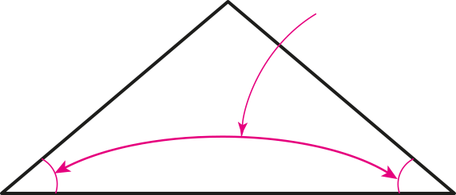

- 개념 정리
- 1
- 2
- 3
- 4
- 5
-
 크기가 같습니다.이등변삼각형은 두 각의 크기가 같습니다. -
1 이등변삼각형을 완성하고, 세 각의 크기를 재어 보세요.
-
2 다음 도형은 이등변삼각형입니다. 안에 알맞은 수를 써넣으세요.
35˚˚35100˚˚40 -
3 주어진 각도를 이용하여 이등변삼각형 ㄱㄴㄷ을 완성해 보세요.
40˚ㄴㄷㄱ -
4 안에 알맞은 수를 써넣으세요.
35˚5 cm5 cm˚3570˚40˚6 cmcm6 -
5 삼각형의 세 각 중 두 각의 크기 입니다. 이등변삼각형인 것에 표 하고, 그 까닭을 써 보세요.
까닭40˚와 100˚의 경우 나머지 한 각의 크기가 40˚이므로 두 각의 크기가 40˚인 이등변삼각형입니다.